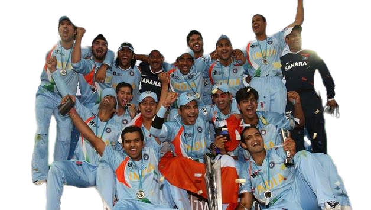

MS Dhoni or Mahendra Singh Dhoni or a Lieutenant colonel, Dhoni is a name of a legend and only captain who won ICC Trophy in all formats. He is the best 'finisher' in limited-overs formats also he is the fastest
Mahendra Singh Dhoni is a former Indian Cricketer who came out of a small town in India and made people all over the world crazy.
But this introduction is not enough for this legend. Today, we see his struggle journey from a ticket collector to becoming an International Cricketer. Let's deep dive into the incredible journey of our Mahi
Mahendra Singh Dhoni was born on 7th July 1981 in Ranchi, Jharkhand (at that time Ranchi was a part of Bihar), India. Mahi is the nickname of MS Dhoni. He was born in a middle-class Hindu Rajput family.
His father's name is Paan Singh Dhoni and his mother's name is Devaki Devi. Dhoni's father worked in MECON as a junior manager.
Dhoni has two siblings. He has a sister, Jayanti, and a brother, names Narendra Singh Dhoni.
Mahi did his schooling at DAV Jawahar Vidhya Mandir, Ranchi, Bihar. From childhood, he loved to play sports. He was excellent in football and badminton
In his school days, he didn't like cricket that much. But he was a huge fan of the former cricketer, SachinTendulkar.
From childhood, he was a love to play football. Mahi was the excellent goalkeeper of his school football team. At an early age, Mahi has started playing football at Ranchi District Level.
By impressed with his excellent goalkeeping, a cricket club approached Mahi. They offered him to join their cricket team as a wicket-keeper. MS Dhoni joined the cricket team and started fall in love with cricket. Dhoni's coach was highly impressed with his Wicket-keeping skills, so he became a regular wicketkeeper in Commando Cricket Club.From there his real journey of cricket started.
The selectors of BCCIsearch for talent from several small townsin India. The group of selectors came to Ranchi where they saw Dhoni's game. They were quite impressed byDhoni's long sixes.And selected Dhoni in the National Cricket Team. This was the very first door for MS Dhoni.
When Dhoni was playing for India A, they had gone for series. Dhoni played his first series against Kenya. The series Dhoni made two centuries and one half-century for India.
After seeing Dhoni's game, the captain Sourav Ganguly and the team selectors decided to select Dhoni in International Indian Cricket Team in 2004 and Dhoni made his international debut. Mahi was one of the player among 15 player in the team.
Journey Began from 0
In 2004 there was a series against Bangladesh Dhoni was also selected in 11 team players but he had not performed well. In his first international match Dhoni was run out at 0.
Apart from that match, in the rest of the series, his performance was not too good.
After some time the captain had shown trust inMahi and his amazing wicket-keeping skillsand select him for the series against Pakistan. Dinesh Kartik was also a good and strong competitor of Dhoni. While Dinesh was already in the team, questions were also being raised on Dhoni's selection.
In the second match of the Pakistan Series, SouravGanguly want to give enough time to Dhoni, so he decided to send himto Number 3. Dhoni came to bat and this time Dhoni came up with a different mind set.
Mahi started to shower fours and sixers. And In his fifth international encounter, he scored 148 runs in 123 balls. against Pakistan, demonstrating excellent batsmanship.This inningwas the first International Century of Dhoni.
With his performance, Dhoni was made an irreplaceable place in the team and the heart of every Indian as well.He entered India's Test team a year later, swiftly establishing himself with a century against Pakistan.
Shortly before the World Cup in 2007, India was not doing well in international matches. India has faced many defeats andthecaptain SouravGanguly resigned from captaincy.
The team had to go to South Africa for T20 World Cup. When team officials asked Sachin about captaincy, he took the first name of Mahi. Team Management agreed with Sachin's opinion and selected Dhoni as the captain of the Indian Team forWorld Cup Tour 2007.And that's how we got our CaptainCool.
The team was performingexcellently. The Indian team was looking very strong and winning matches one after the other. India defeated Australia, South Africa, and Pakistan.
The team was performing great in the leadership of MS and India reached to the finals of world cup.Although India set a very low score against Pakistan yet the bowlers, fielders, and Dhoni's strategies were able to defend such a low score.
India won by 5 runs and liftedthe first T20WorldCup. Dhoni's performance in World Cup made him the ODI captain of team India.
In 2008, India won the commonwealth Series in Australia by defeating Australia.
MS Dhoni is a legend and a youth icon. The list of his achievements is as long as the list of his struggles and failures. Here are some highlights of his achievements and awards are as a captainof the Indian Cricket Team and as anIndividual are giving below: